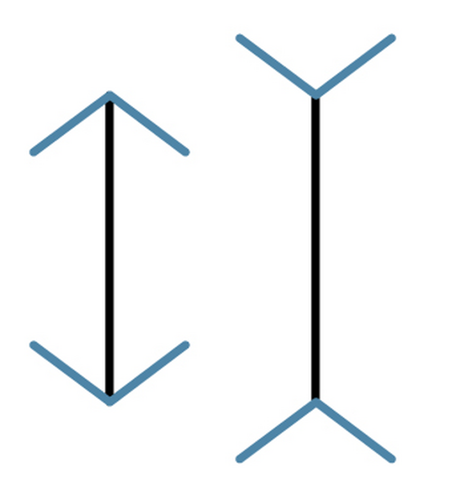
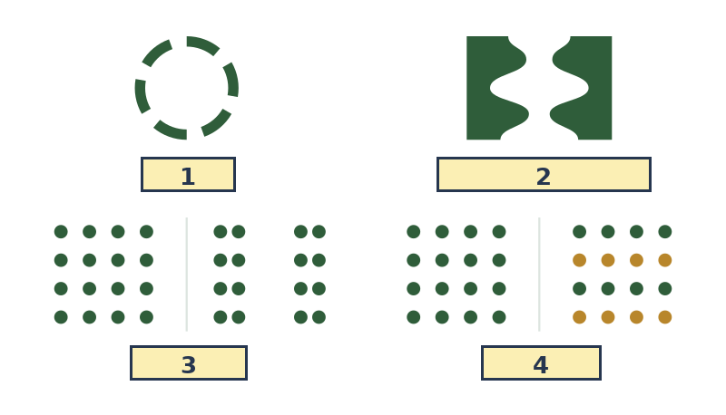
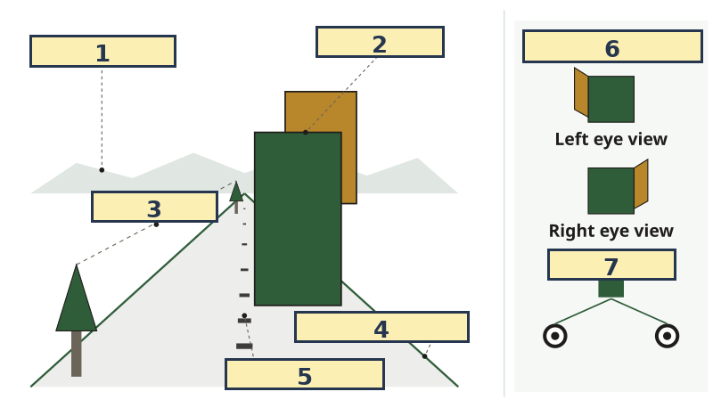
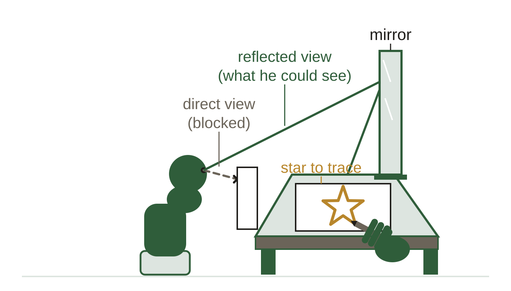

AP Psychology · Class 06
Figures from your class notes
Perception, thinking, and what memory is. These are the same figures as in your Class Notes, in the same order. If a figure in your notes shows as a gray box, use this page instead.
Slide 7. Environment Calibrates the Illusion

Slide 8. Grouping: Seeing Wholes

Slide 10. Reading Depth From a Flat Image (continued)

Slide 25. H.M.: One Patient, Two Systems
